Buscando el bosón de Higgs con datos abiertos de CMS
Autor: Valeria Rocha Garcia. Esta página es el producto de sus prácticas profesionales, con la asesoría de Isabel Pedraza.
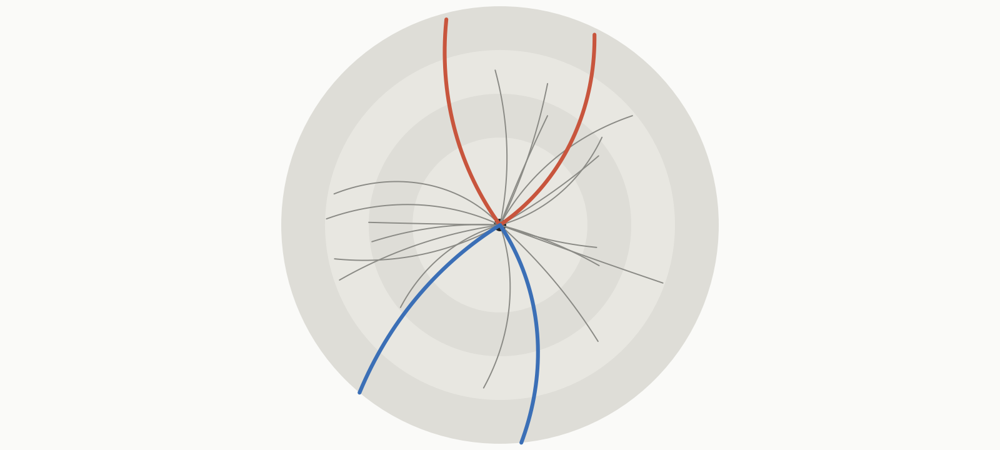
Bienvenido. En esta página vas a hacer lo mismo que hace un científico del experimento CMS: tomar millones de colisiones de partículas y filtrar los datos hasta encontrar una señal muy pequeña, la del bosón de Higgs. No necesitas conocimientos previos de física, solo curiosidad.
¿Qué es el CERN?
El CERN es la Organización Europea para la Investigación Nuclear, cerca de Ginebra, fundada en 1954. Ahí está el LHC, el acelerador de partículas más grande del mundo, donde se hacen chocar protones para estudiar de qué está hecha la materia.
¿Qué es CMS?
CMS (Compact Muon Solenoid) es uno de los grandes detectores del LHC. Es operado por una colaboración de miles de científicos de decenas de países. En 2012, CMS y ATLAS anunciaron el descubrimiento del bosón de Higgs.
Al terminar esta página podrás…
- Explicar qué son las partículas, el Modelo Estándar y el bosón de Higgs.
- Describir cómo un detector como CMS identifica electrones y muones.
- Explicar qué es una simulación Monte Carlo y para qué sirve.
- Aplicar cortes a datos reales y ver cómo aparece (o no) una señal.
Ir directo a una sección
Hoja de ruta
| Sección | ¿Qué vas a hacer? |
|---|---|
| Fundamentos de la física de partículas | Conocer las partículas, el Modelo Estándar, los bosones Z y W y el Higgs. |
| El LHC y el detector CMS | Ver cómo se producen las colisiones y cómo se detectan electrones y muones. |
| Cómo se analiza un dato | Entender la masa invariante, el canal H → ZZ → 4 leptones, la estadística y los filtros de selección. |
| Simulaciones Monte Carlo | Descubrir qué son las simulaciones, la señal, el fondo y los pesos. |
| Analiza los datos | Resolver un reto: elegir cortes paso a paso hasta que tu gráfica se parezca a la oficial. |
| Conclusiones y autoevaluación | Repasar lo aprendido, el glosario y contestar un mini examen. |
| Descarga de datos y créditos | Bajar los datos y el código para repetirlo en tu computadora. |
Fundamentos de la física de partículas
¿Qué son las partículas?
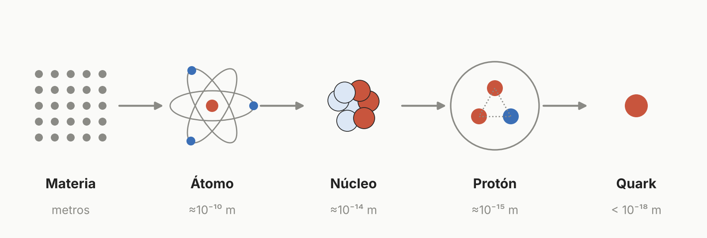
Todo lo que ves está hecho de átomos. Un átomo tiene un núcleo (protones y neutrones) y electrones a su alrededor. Pero los protones y neutrones tampoco son lo más pequeño: están hechos de quarks, unidos por gluones. A las piezas que, hasta donde sabemos, ya no se pueden dividir las llamamos partículas elementales.
Un protón, por ejemplo, es una partícula compuesta: dos quarks up y uno down, además de gluones. El electrón, en cambio, es elemental.
Los aceleradores son microscopios
Para ver estructuras más pequeñas se necesita más energía. Por eso se construyen aceleradores: al hacer chocar partículas con energías enormes, se puede explorar lo muy pequeño y producir partículas nuevas, que existen solo un instante antes de desintegrarse.
GeV = gigaelectronvoltio, unidad de energía y de masa en física de partículas. Un protón pesa casi 1 GeV (y 1 TeV = 1,000 GeV).
Leptones: electrones, muones y compañía
Los leptones son partículas elementales que no sienten la fuerza fuerte. Hay tres 'sabores' con carga eléctrica (electrón, muón, tau) y tres neutrinos, sin carga.
| Carga | Masa | ¿Qué pasa con ella? | |
|---|---|---|---|
| Electrón (e) | −1 | 0.511 MeV | Es estable: se detecta fácilmente en el rastreador y el calorímetro. |
| Muón (μ) | −1 | 105.7 MeV | Dura unos 2.2 microsegundos, pero a velocidades cercanas a la de la luz le alcanza para atravesar todo el detector. |
| Tau (τ) | −1 | 1.777 GeV | Se desintegra casi al instante (≈ 3×10⁻¹³ s): no la vemos directamente. |
| Neutrinos (ν) | 0 | casi cero | Casi no interactúa con la materia: escapa del detector sin dejar señal. |
Cada partícula tiene una antipartícula con la carga contraria: el positrón (+1) para el electrón y el antimuón (+1) para el muón. En el detector distinguimos ambos por hacia dónde se curvan en el campo magnético.
El Modelo Estándar
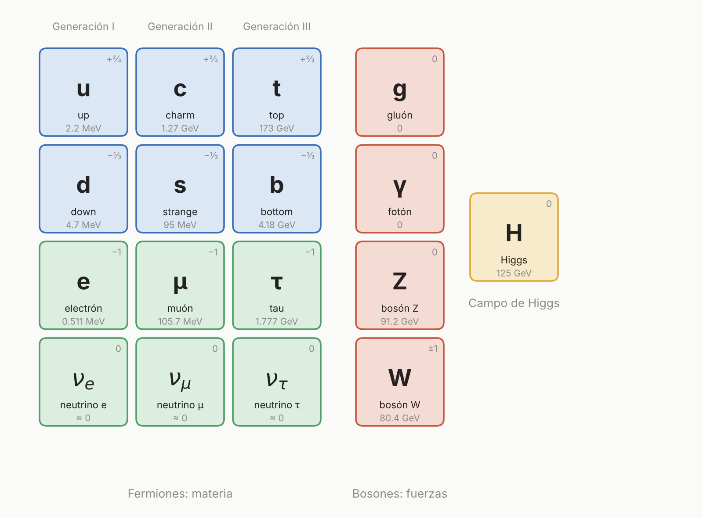
Es la teoría que ordena todas las partículas elementales conocidas en dos grupos:
- Fermiones (los ladrillos de la materia): 6 quarks y 6 leptones, en tres 'generaciones' cada vez más pesadas. La materia ordinaria solo usa la primera (u, d, e).
- Bosones (transmiten las fuerzas): el fotón (electromagnetismo), los bosones W y Z (fuerza débil) y los gluones (fuerza fuerte).
- El bosón de Higgs, una partícula especial ligada a cómo las demás obtienen su masa.
Lo que el Modelo Estándar todavía no explica
- La gravedad: no está incluida en el modelo.
- La materia oscura y la energía oscura: la materia ordinaria es solo ≈ 5 % del universo; ≈ 27 % sería materia oscura y ≈ 68 % energía oscura.
- Las masas de los neutrinos y por qué hay más materia que antimateria.
Los bosones Z y W
Los bosones W (carga ±1, masa de unos 80 GeV) y Z (neutro, unos 91 GeV) transmiten la fuerza débil, responsable, por ejemplo, de ciertas desintegraciones radiactivas. Se descubrieron en el CERN en 1983.
Ambos viven un instante muy corto y se desintegran enseguida. El Z se puede desintegrar en un par de leptones de carga opuesta: alrededor de 3 de cada 100 veces en un electrón y un positrón, y otras 3 de cada 100 en un muón y un antimuón. Esos pares son los que buscamos.
Esto es importante porque el Higgs que buscamos se desintegra en dos bosones Z.
¿Qué es una partícula 'virtual'?
Una partícula virtual es una que existe solo un instante y no tiene exactamente su masa 'normal'. Como el Higgs (125 GeV) pesa menos que dos Z juntos (≈ 182 GeV), una de las dos Z tiene que ser virtual, con una masa menor. La llamamos Z*.
El bosón de Higgs
Según el Modelo Estándar, las partículas elementales adquieren masa al interactuar con el campo de Higgs, que llena todo el espacio. El bosón de Higgs es una pequeña vibración de ese campo, igual que una ola es una vibración del mar.
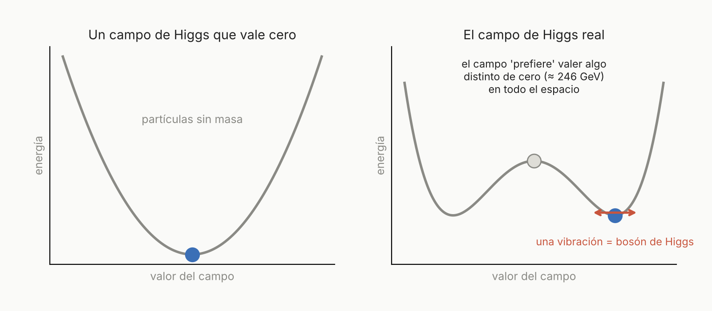
Un poco de historia
- 1964: varios físicos, entre ellos Peter Higgs, François Englert y Robert Brout, proponen el mecanismo.
- 2012 (4 de julio): ATLAS y CMS anuncian el descubrimiento de una nueva partícula de unos 125 GeV.
- 2013: Peter Higgs y François Englert reciben el Premio Nobel de Física.
¿Qué lo hace especial?
- Es la única partícula elemental conocida sin espín (espín 0).
- Da masa a los bosones W y Z y a los quarks y leptones cargados.
- No explica toda la masa de la materia: la mayor parte de la masa de un protón viene de la energía de la fuerza fuerte entre sus quarks, no del Higgs.
¿Cómo se desintegra?
El Higgs vive una fracción minúscula de segundo (≈ 10⁻²² s) y no se ve directamente: lo identificamos por las partículas en las que se desintegra.
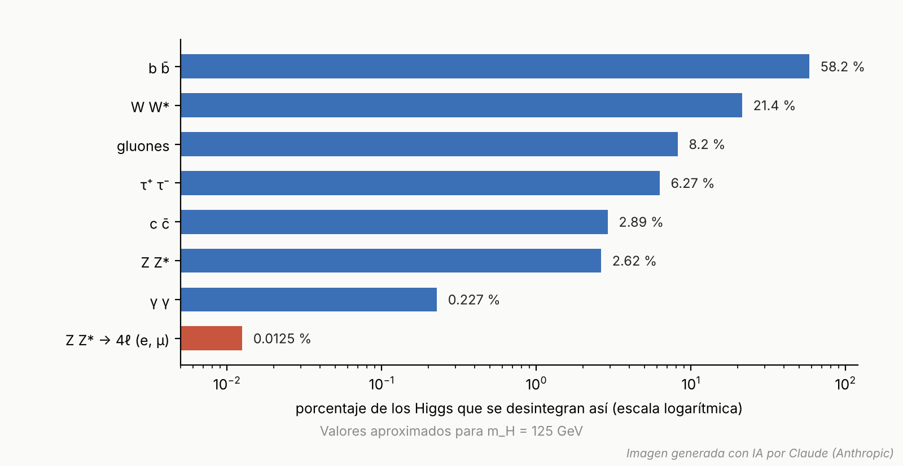
El modo más frecuente (b b̄) está sepultado en ruido de fondo, mientras que el canal de 4 leptones es muy raro pero muy limpio. Por eso lo usamos.
El LHC y el detector CMS
Colisiones protón-protón
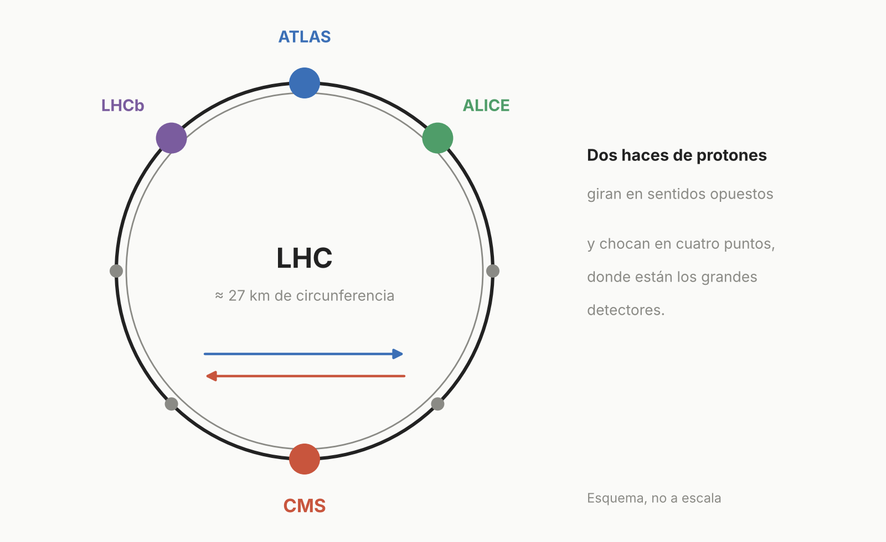
El LHC (Gran Colisionador de Hadrones) es un anillo de unos 27 km de circunferencia, enterrado cerca de Ginebra. Acelera protones casi a la velocidad de la luz en dos haces que giran en sentidos opuestos. En 2012 cada haz tenía 4 TeV, así que cada choque tenía 8 TeV de energía. Cada choque se llama evento.
Los protones viajan en paquetes que se cruzan decenas de millones de veces por segundo, y en cada cruce chocan, en promedio, alrededor de 20 pares de protones a la vez. Es imposible guardar todo: un sistema de selección llamado trigger decide en una fracción de segundo qué eventos valen la pena y guarda solo unos cientos por segundo.
Luminosidad y número de eventos
La luminosidad integrada (L) mide cuántas colisiones se acumularon. Los datos que usamos corresponden a 11.58 fb⁻¹ (= 11,580 pb⁻¹; 1 fb⁻¹ = 1,000 pb⁻¹). Si un proceso tiene sección eficaz σ (qué tan probable es), el número esperado de eventos es:
¿Cómo detecta CMS a los leptones?
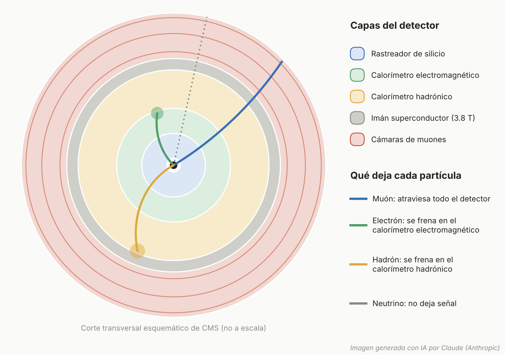
CMS mide unos 21 m de largo y 15 m de diámetro, y pesa unas 14,000 toneladas. Está formado por capas, como una cebolla, y cada una mide algo distinto:
- Rastreador de silicio: sigue la trayectoria de las partículas cargadas. De ahí salen variables como pT, η, φ, dxy y dz.
- Calorímetro electromagnético: frena a los electrones y mide su energía.
- Calorímetro hadrónico: frena a los hadrones (protones, piones…).
- Imán superconductor (3.8 teslas): curva las trayectorias. El sentido de la curva dice la carga.
- Cámaras de muones: los muones son los únicos que atraviesan casi todo el detector.
¿Cómo se mide el pT con la curvatura?
Una partícula cargada en un campo magnético B describe un círculo. Mientras más energía tiene, más abierto es el círculo:
Con B = 3.8 T, un leptón de 20 GeV describe un círculo de unos 17.5 m de radio.
Las variables que usaremos
Estas son las medidas que usan los cortes del tutorial. Cada una se explica con un esquema.
η y pT: ¿hacia dónde va y con cuánta fuerza?
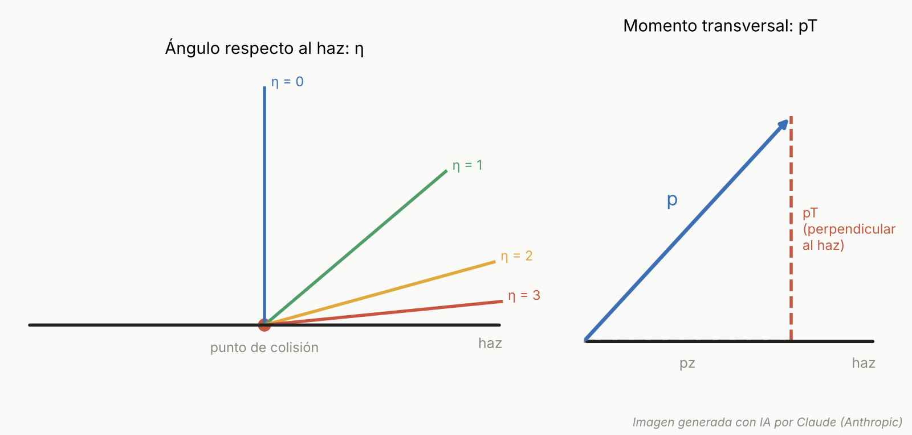
η (eta) indica el ángulo respecto al haz: η = 0 es perpendicular y valores grandes son casi paralelos al haz. El detector solo mide bien hasta |η| ≈ 2.5. pT es la parte del momento perpendicular al haz, la que más nos interesa.
dxy y dz: ¿nació en el punto de colisión?
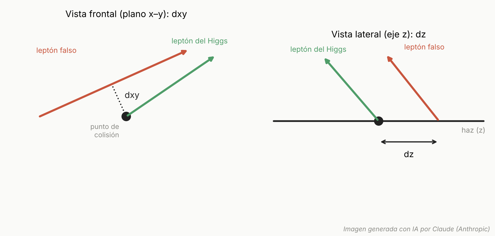
Un leptón que viene de un Higgs nace justo en el punto de colisión, así que su trayectoria pasa casi por ahí. dxy y dz miden qué tan lejos pasa, en el plano transversal y a lo largo del haz. SIP3D combina ambas distancias y las compara con su incertidumbre.
Aislamiento: ¿viene solo o acompañado?
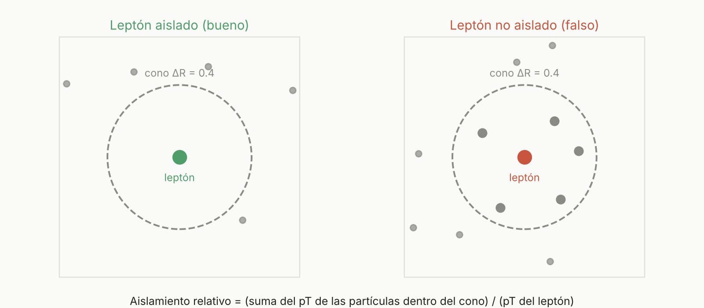
Los leptones de un Higgs suelen estar solos. Los falsos (por ejemplo, de la desintegración de quarks pesados) vienen rodeados de otras partículas. El aislamiento relativo mide esa actividad alrededor del leptón.
Del detector al archivo CSV
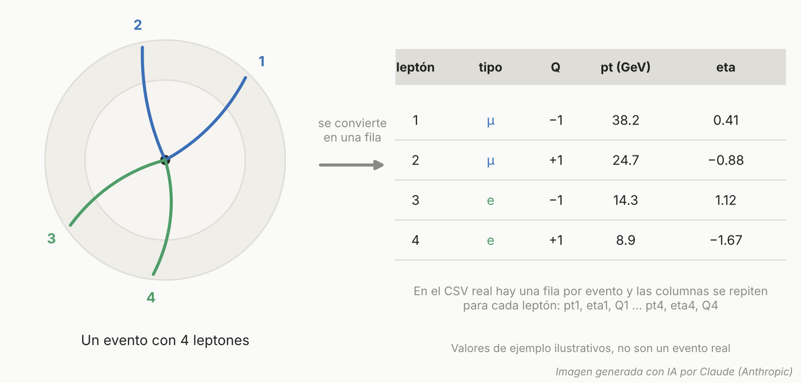
- El detector registra la colisión y el trigger decide si la guarda.
- Se reconstruyen las partículas a partir de las señales de cada capa.
- CERN Open Data publica los eventos en archivos con formato ROOT.
- Nosotros los convertimos a CSV: una fila por evento y una columna por cada medición
(
pt1,eta1,Q1…). - Los CSV completos pesan varios gigabytes, por eso en esta página trabajamos con una versión reducida.
Cómo se analiza un dato
La receta de un análisis
- Elegir qué buscar: un proceso concreto, aquí H → ZZ → 4 leptones.
- Seleccionar eventos: aplicar cortes para quedarnos con los que parecen la señal.
- Predecir el fondo: con simulaciones Monte Carlo, qué esperamos sin Higgs.
- Comparar con los datos: poner datos y predicción en la misma gráfica.
- Medir la incertidumbre: ¿el exceso es mayor que una fluctuación al azar?
- Concluir: ¿hay evidencia de algo nuevo?
La masa invariante
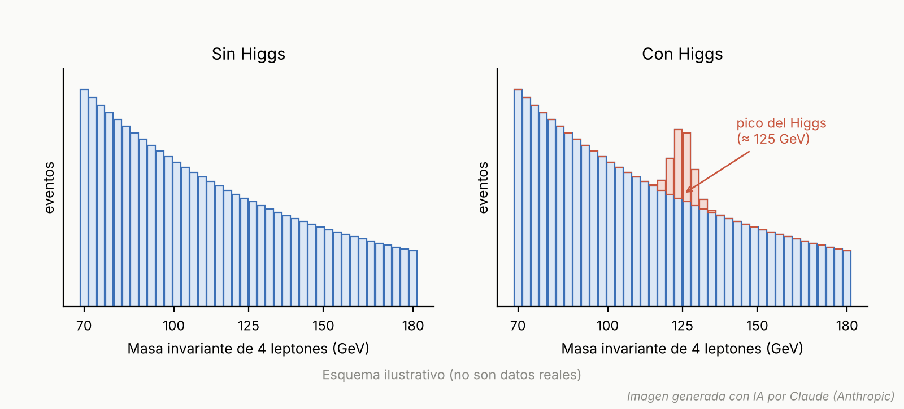
Si una partícula pesada se desintegra, no podemos verla, pero sí a sus hijas. Con la energía y el momento de las hijas se reconstruye la masa de la madre:
Ejemplo: si un electrón y un positrón vienen de un Z, su masa invariante sale cerca de 91 GeV. Si vienen de un Higgs, los 4 leptones dan un valor cercano a 125 GeV. Si vienen de otros procesos, la masa se reparte en muchos valores. Cada evento aporta un número, y al juntar muchos eventos buscamos un pico.
Ejercicio: ¿de qué partícula vienen estos leptones?
Un detector midió los leptones de la tabla (los tratamos sin masa, porque es muy pequeña comparada con su energía). Calcula su masa invariante y decide qué partícula los produjo.
¿Por qué buscar el Higgs en 4 leptones?
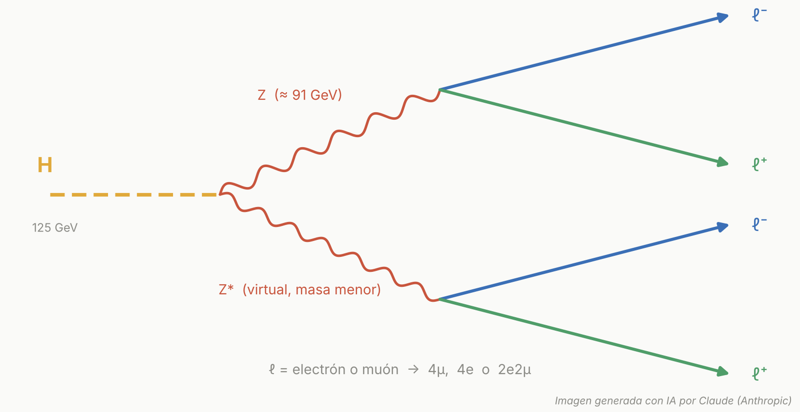
Una forma en que el Higgs se desintegra es H → Z + Z* → 4 leptones (electrones o muones). Es un canal muy raro, solo alrededor de 1 Higgs de cada 8,000, pero muy limpio: los leptones se miden con gran precisión y hay poco ruido de fondo. Junto con la desintegración en dos fotones, fue uno de los canales del descubrimiento de 2012.
Como el Higgs (125 GeV) pesa menos que dos Z (2 × 91 GeV), una de las dos Z es virtual y tiene una masa menor. Por eso en los cortes la masa de Z2 se permite desde 12 GeV.
Hay tres combinaciones finales: 4 muones, 4 electrones o 2 electrones + 2 muones.
Estadística básica
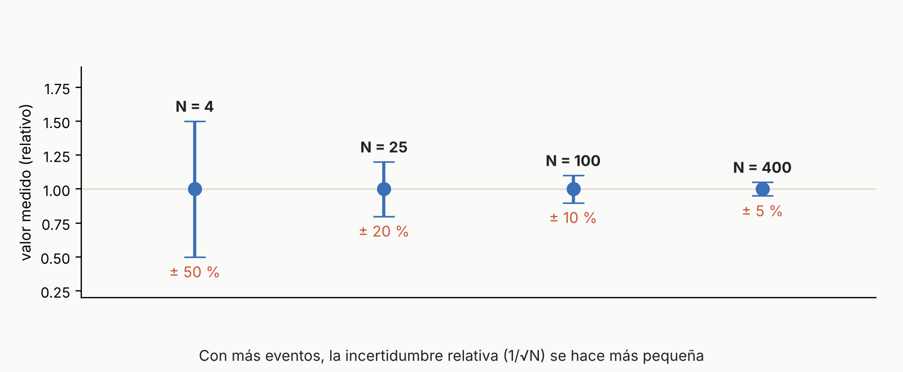
- Histograma: cuenta cuántos eventos caen en cada intervalo de masa.
- Incertidumbre estadística: si en un intervalo hay N eventos, la incertidumbre es √N. Por eso los puntos de los datos llevan barras de error.
- Fluctuaciones: aunque el fondo esperado sea 10 eventos, a veces se observan 8 y a veces 13. Un exceso solo es convincente si es mucho mayor que esas fluctuaciones.
- 5 sigmas (5σ): el estándar para declarar un descubrimiento. Significa que, sin una partícula nueva, un exceso así ocurriría por azar aproximadamente 1 vez de cada 3.5 millones.
Selección de eventos: los cortes
Entre millones de eventos, casi todos contienen leptones falsos (por ejemplo, de otras partículas que se parecen a un leptón). Un corte (o filtro) descarta eventos que no se comportan como un Higgs real. Los que usamos:
| Corte | Explicación física |
|---|---|
| pT mínimo | Los leptones de baja energía suelen ser falsos o ruido. |
| |η| máximo | Más allá de cierto ángulo el detector no mide bien. |
| |dxy| y |dz| | Un leptón del Higgs nace en el punto de la colisión; si pasa lejos, viene de otro lugar. |
| SIP3D | Mide qué tan compatible es el leptón con nacer en el punto de colisión. |
| Aislamiento | Los leptones buenos están 'solos'; los falsos vienen rodeados de otras partículas. |
| Carga total = 0 | El Higgs es neutro: 2 leptones positivos y 2 negativos suman cero. |
| pT1 y pT2 | Los dos leptones más energéticos deben pasar un umbral (por el sistema de disparo). |
| Emparejamiento Z+Z | Deben poder formarse dos pares del mismo sabor y carga opuesta (dos Z). |
| Masas de Z1 y Z2 | Z1 debe tener una masa cercana a la de la Z y Z2 puede ser virtual. |
| mll mínima | Elimina resonancias de baja masa que no son del Higgs. |
| m4l mínima | Se descartan masas demasiado bajas para el Higgs. |
Simulaciones Monte Carlo (MC)
¿Qué es una simulación Monte Carlo?
Es un programa que inventa colisiones siguiendo las leyes de la física, con números aleatorios (de ahí el nombre, por el casino de Montecarlo). También simula cómo el detector vería las partículas. Así sabemos qué esperar antes de mirar los datos reales.
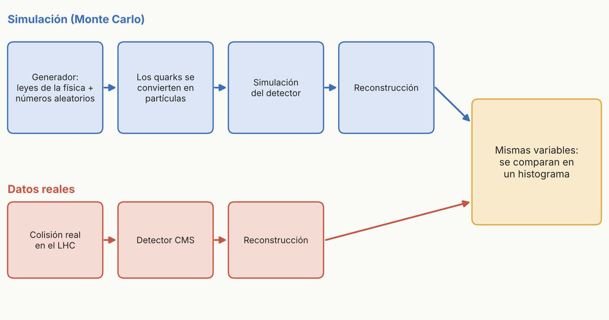
Pruébalo: estima π con números aleatorios
Se lanzan puntos al azar en un cuadrado de lado 1. La fracción que cae dentro del cuarto de círculo es π/4. Con más puntos, la estimación mejora: así funcionan las simulaciones Monte Carlo, con muchísimos números aleatorios.
Cómo se simula una colisión
- Generador de eventos (por ejemplo, Pythia): sortea qué proceso ocurre y con qué energías, según las probabilidades que da la teoría.
- Quarks y gluones → partículas: los quarks no existen solos; se simula cómo se convierten en chorros de partículas que sí veremos.
- Simulación del detector (con un programa llamado GEANT4): se calcula cómo cada partícula atraviesa el material de CMS y qué señales deja.
- Reconstrucción: se aplica el mismo programa que a los datos reales.
Se simulan millones de eventos porque los procesos raros ocurren muy pocas veces, y para tener una predicción con poca incertidumbre estadística hacen falta muchos.
Señal y fondo
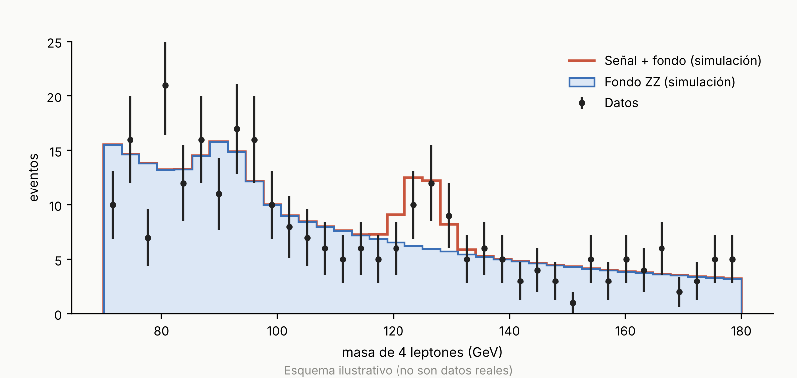
- Señal: lo que buscamos. Aquí, la simulación de Higgs → ZZ → 4 leptones.
- Fondo: otros procesos que también producen 4 leptones y se parecen a la señal. Aquí, ZZ → 4μ, ZZ → 4e y ZZ → 2e2μ.
- Si en los datos hay más eventos que el fondo cerca de 125 GeV, hay algo extra: el Higgs.
Las simulaciones que usamos
Pesos: cómo comparar simulación con datos
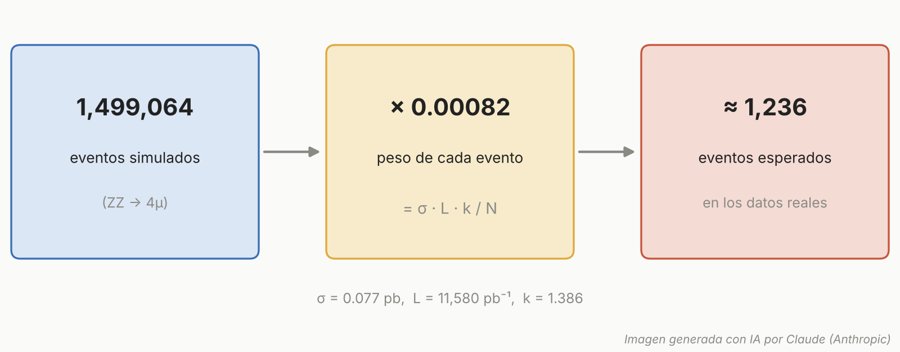
Se simulan millones de eventos, pero no son tantos como los reales. Cada evento simulado recibe un peso para que el total corresponda a lo que se esperaría en los datos reales:
- L: luminosidad, 11,580 pb⁻¹.
- σ: sección eficaz del proceso (qué tan probable es), en pb.
- k: factor de corrección a órdenes superiores (en el fondo ZZ vale 1.386).
- N generados: eventos que produjo el programa.
Cuando haces la gráfica, cada evento simulado cuenta con su peso y no como '1'. Los datos reales siempre pesan 1.
Limitaciones
Nuestras simulaciones solo incluyen el fondo ZZ. En el análisis completo de CMS hay otros fondos (por ejemplo, Z + jets), que aquí no están. Por eso no todo lo que ves en los datos reales se puede explicar con las simulaciones.
- Solo usamos una parte de los datos y de los procesos.
- No incluimos incertidumbres sistemáticas (por ejemplo, la eficiencia de identificar leptones).
- Las simulaciones también tienen incertidumbre estadística.
Analiza los datos
¿Cómo se ven los archivos CSV?
Cada fila es un evento con 4 leptones. Las columnas con número (1 a 4) se repiten para cada leptón, ordenados por pT.
| Columna | Significado |
|---|---|
| run, luminosityBlock, event | Identifican el evento de forma única. |
| MET_pt, MET_phi | Energía transversal 'perdida' (neutrinos, por ejemplo). |
| PID1…PID4 | Tipo de partícula: ±11 es electrón, ±13 es muón. |
| Q1…Q4 | Carga eléctrica (+1 o −1). |
| pt1…pt4 | Momento transversal (GeV). |
| eta1…eta4 | Ángulo respecto al haz. |
| phi1…phi4 | Ángulo alrededor del haz. |
| mass1…mass4 | Masa del leptón (GeV). |
| dxy1…dxy4 y dz1…dz4 | Distancia de la trayectoria al punto de colisión (cm). |
| dxyErr1…dzErr4 | Incertidumbre de esas distancias. |
| pfRelIso03_all, pfRelIso04_all | Aislamiento relativo con cono 0.3 y 0.4. |
Tutorial: limpia los datos paso a paso
Empiezas sin ningún corte, con todo el ruido. Tu misión es activar los cortes y elegir sus valores para que la gráfica "Tus cortes" se parezca a la gráfica "Meta", que usa la selección oficial. Avanza por los pasos, uno a la vez, y fíjate cómo cambia la gráfica.
📋 Tabla de cortes oficiales
Tabla cutflow
Resultado final
Gráfica generada con el script 03_grafica_final.py

Preguntas para pensar
- ¿Qué corte elimina más eventos de datos reales? ¿Y cuál afecta menos a la señal del Higgs?
- Si aprietas demasiado los cortes, ¿qué le pasa a la señal? ¿Por qué no conviene?
- ¿Qué corte te pareció más importante para que aparezca el pico? Justifica tu respuesta.
- ¿Por qué crees que se exige que la carga total sea cero?
- Con tus cortes, ¿los datos de CMS están de acuerdo con la simulación ZZ + Higgs?
Conclusiones, glosario y autoevaluación
Lo que aprendiste
- Los datos de colisiones contienen muchísimo ruido; los cortes sirven para limpiarlos.
- Las simulaciones Monte Carlo nos dicen qué esperar de la señal y del fondo, y los pesos permiten compararlas con los datos.
- El Higgs se busca como un pico cerca de 125 GeV en la masa de 4 leptones.
- Para afirmar un descubrimiento hace falta compararlo con la incertidumbre estadística.
¿Y ahora qué?
- Prueba con otros cortes en el tutorial y observa qué pasa con la señal.
- Explora otros canales del Higgs, como la desintegración en dos fotones.
- Los experimentos del LHC siguen buscando física nueva: materia oscura, partículas todavía desconocidas y medidas más precisas del Higgs.
Descarga de datos y créditos
Para ir más lejos
- CERN Open Data: datos públicos de CMS y otros experimentos.
- ATLAS Open Data: recursos educativos del experimento ATLAS.
- CERN y CMS: noticias y material divulgativo.
Créditos y referencias
- Autor: Valeria Rocha Garcia. Esta página es el producto de sus prácticas profesionales, con la asesoría de Isabel Pedraza.
- Datos: colaboración CMS, portal CERN Open Data, licencia CC0.
- Análisis basado en: CMS Collaboration, Observation of a new boson at a mass of 125 GeV, arXiv:1207.7235.
- Las ilustraciones son esquemas hechos para esta página; no son imágenes reales de CMS ni están a escala.
- Esta página está inspirada en la aplicación ATLAS Open Data en el aula.